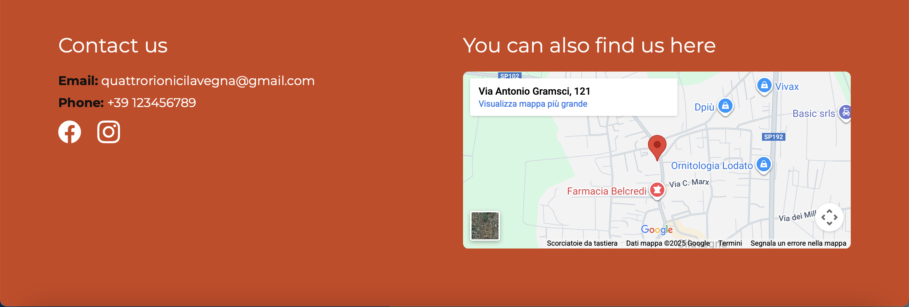
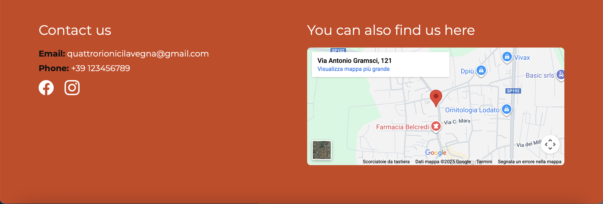

Exam Web Communication Project - Quattro Rioni Website
13/12/2025
Website Structure
Homepage: contains the title, hero image, presentation, and a call to action to immediately join the association; in the center: about us, with a summary of the activity of the association, and a calendar made by Google Calendar to show upcoming events; at the bottom: a footer with e-mail and phone number, links to social pages, and a map to easily find Cilavegna and the association’s address.

 

Gallery contains images of past events (Bootstrap
carousel).
Subscribe: a form to collect name and email to become a
member of “Quattro Rioni”.

All pages are connected with a menu for easy navigation.
- Bootstrap 5 for flexboxes, image carousel, icons and subscription form.

- JavaScript for interactivity at the end of the subscription process, displaying a “Thank you for subscribing to our community!” confirmation message.